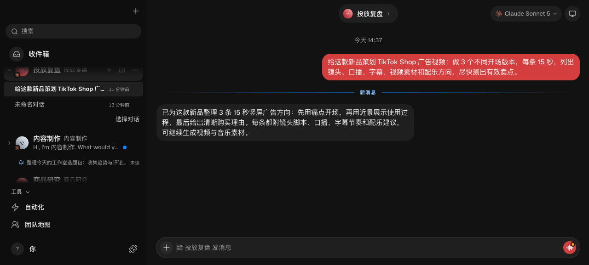

把能力放进你的业务
不同团队，都能把工作
接力到下一步。
Bot 不只是回答问题。它们能分工研究、组织资料、制作内容、准备剪辑，再把成果留在团队可以复核和继续安排的位置。
01 / 独立站团队 · 从上新到复盘
把选品、商品页和推广素材接在一起。
团队不必在评论、商品资料、文案文档和广告素材之间反复找上下文。Bot 先整理信息，再把下一棒需要的内容准备好，让运营更快开始判断与测试。
- 01研究 Bot 汇总竞品页面、商品评价、价格区间和客户常见问题。
- 02运营 Bot 提炼差异化卖点，整理商品页结构与上新待办。
- 03内容 Bot 接着准备详情文案、广告图片、短视频脚本和邮件素材。
- 04复盘 Bot 归拢素材版本与投放反馈，团队据此决定下一轮创意。
收益：少做重复信息整理，更快启动素材测试；每轮复盘都能接上前一次的结论。

02 / TikTok Shop · 广告视频创作
一款商品，准备多种值得测试的视频切口。
围绕商品卖点和受众问题拆创意，不只写一段脚本。研究、分镜、画面素材、配乐和粗剪初稿顺着同一任务推进，创意负责人集中比较不同开场与表达。
- 01研究 Bot 从商品信息和客户反馈中找出可讲的痛点与购买理由。
- 02策划 Bot 设计多个开场方向，并整理 15 秒脚本、口播和镜头安排。
- 03制作 Bot 准备商品画面、视频素材、字幕节奏和配乐方向。
- 04剪辑 Bot 汇总素材并生成竖屏粗剪版本，团队确认后再进入投放。
收益：更快比较开场和卖点表达，把测试建立在明确的创意假设上。

03 / 自媒体工作室 · 从选题到剪辑
让选题不再从空白文档开始。
把趋势、资料来源、受众问题和历史内容交给 Bot 团队先做整理。创作者拿到的不是孤立灵感，而是能接着写脚本、做素材和安排剪辑的内容包。
- 01研究 Bot 搜集主题资料、受众常见问题与可引用信息。
- 02策划 Bot 整理选题角度、内容大纲、短视频脚本和分镜。
- 03创作 Bot 准备封面图、插图、视频片段与背景音乐。
- 04剪辑 Bot 整理素材、字幕和音乐，形成可复核的剪辑初稿。
收益：把更多精力放在观点与表达，让素材积累和稳定更新变得更容易。